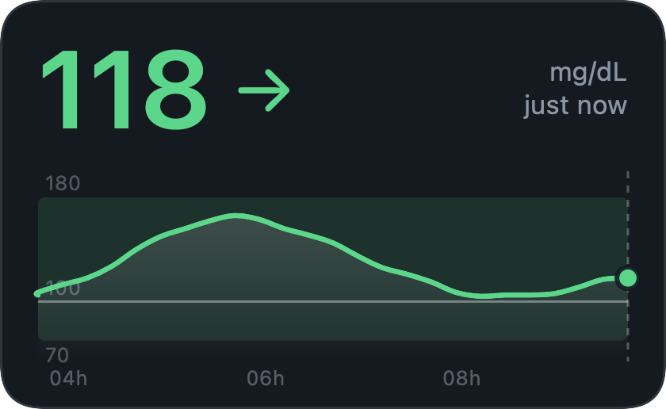
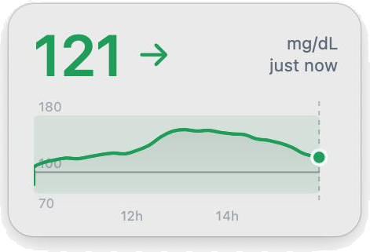
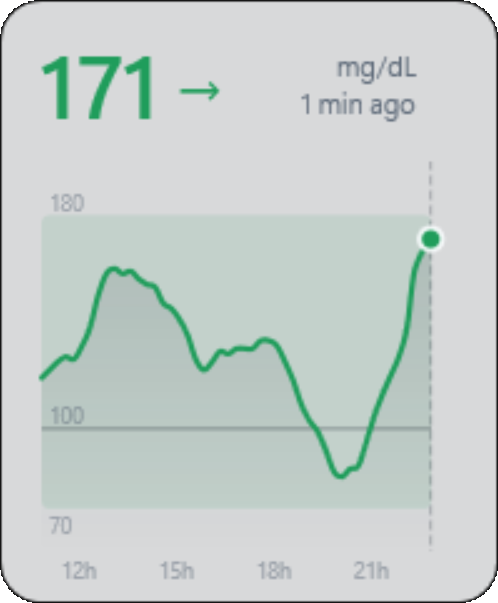
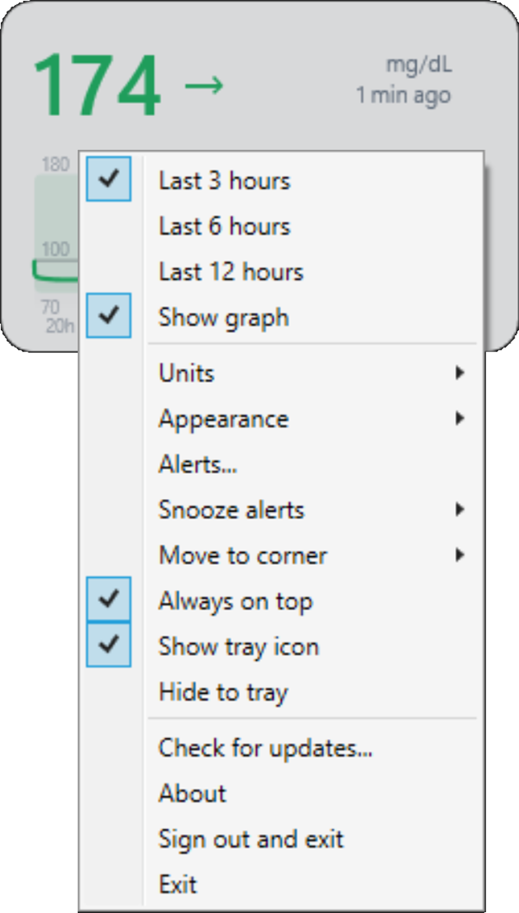
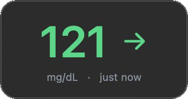
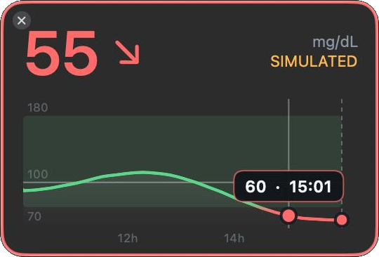
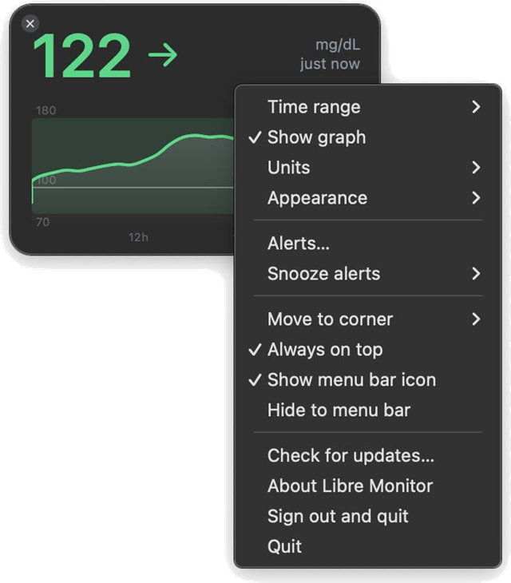

Your FreeStyle Libre glucose, always visible on your desktop.
A small widget for Windows and macOS. Free and open source.
Windows 10 or 11 (64-bit) · macOS 13 or newer, Apple Silicon or Intel


How it works
The phone app reads the sensor and uploads to LibreView. Libre Monitor does not talk to the sensor. It signs in to the unofficial LibreLinkUp follower service and only reads what your phone has already uploaded.
What it does
A glance at your number, trend and graph, without picking up your phone.
Always in view
A borderless, always-on-top widget with the current value, trend arrow and a smooth graph with the 70–180 mg/dL band and a 100 reference line.
Hover for detail
Hover the graph to see the value and time of any reading.
Make it yours
3, 6 or 12 hour range, mg/dL or mmol/L, and a light or dark theme.
Tray or menu bar
The current value on a coloured tile, so you can read it even when the widget is hidden.

The widget on macOS. Resize it to any size you like.
Optional alerts
Low and high limits of your choice: a system notification, a sound and a coloured widget border, with reminders and snooze.
Read-only
It never changes anything in your account and never talks to the sensor.
Your login stays yours
Stored encrypted for your Windows user only, or in your Mac's Keychain. Never sent anywhere except to LibreView.
No history kept
It shows what LibreView provides right now. Nothing about your readings is saved on your computer. For history and reports, use LibreView.
The colours for low, in range and high are for display only. They are not alarms.
On Windows
Move it, resize it, change it to use it your way. Activate alerts to use Windows notifications.



On a Mac
The same widget, native to macOS, with a menu bar item and Notification Centre alerts.



Getting started
Invite a follower. In the LibreLink phone app open Connected apps > LibreLinkUp and invite a second email address.
Create the follower account. Install the official LibreLinkUp app on a phone and create the account there with that email, then accept the invitation. There is no website sign-up (see www.librelinkup.com). This also clears the terms and email verification that signing in needs.
Download. Get the file for your computer from the latest release.
- Windows:
LibreMonitor-win-x64.exe - Mac:
LibreMonitor-mac.zip
- Windows:
Start it and sign in with the follower account, not your main one.
- Windows: run the exe. If Windows shows a blue warning, see first-open warnings.
- Mac: unzip, drag LibreMonitor.app into Applications and open it. macOS warns the first time, see first-open warnings. The app has no Dock icon: look for the widget and the menu bar item.
First-open warnings
Neither app is signed with a paid certificate, so Windows and macOS each show a warning the first time. Both are expected and do not mean the file is damaged.
Windows SmartScreen: "Windows protected your PC"
The executable is not code-signed, so the first time someone runs it, Windows SmartScreen shows a blue window. This is expected for any unsigned program from an unknown publisher. To run it:
- Click More info.
- Click Run anyway.
Windows remembers the choice for that file. If the file came from the internet, you can also tick Unblock in the file's Properties before running it. Removing the warning needs a code-signing certificate, which costs money every year. Some antivirus tools may also flag the single-file build.
macOS: "cannot check it for malicious software"
The Mac app is not notarised by Apple (that needs a paid Apple Developer account), so the first time you open it macOS says it cannot check it for malicious software. To open it:
- Control-click (right-click) LibreMonitor.app in Applications and choose Open, then Open again. On recent macOS versions you may instead have to open System Settings > Privacy & Security and click Open Anyway.
- If that does not work, run this once in Terminal, then open the app normally:
xattr -dr com.apple.quarantine /Applications/LibreMonitor.app
The app is signed with a free ad-hoc signature, which Apple Silicon Macs require in order to run it at all.
Using the widget
Position, size and preferences are remembered. Right-click the widget to open the menu.
| To do this | Do this |
|---|---|
| Move it | Drag it |
| Resize it | Drag any edge or corner |
| Change the time range | Mouse wheel over the widget, or the menu |
| Hide or show the graph | Menu > Show graph (untick it for a compact widget with just the number) |
| See a reading's value and time | Hover the graph |
| Switch mg/dL and mmol/L | Menu > Units |
| Light, dark or follow the system | Menu > Appearance |
| Set up low and high alerts | Menu > Alerts… |
| Pause alerts for a while | Menu > Snooze alerts |
| Snap to a screen corner | Menu > Move to corner |
| Hide it to the tray or menu bar | Click the ✕, or Menu > Hide to tray |
| Bring it back | Click the tray or menu bar icon |
| Turn the tray icon off | Menu > untick Show tray icon (the ✕ then exits instead of hiding) |
| Sign out | Menu > Sign out and exit |
| Quit | Menu > Exit, or the tray icon's menu |
Alerts
Open Menu > Alerts… to turn on a low alert, a high alert, or both, and set your own limits in mg/dL or mmol/L. They are off until you turn them on. Use Send test alert to see what one looks like.

- When it alertsOnce, when a reading goes below the low limit or above the high limit. The widget border turns red (low) or amber (high) while the reading stays out of range.
- RemindersWhile still out of range you can be reminded every 15, 30 or 60 minutes, or not at all.
- No repeats at the limitAfter an alert, the reading has to come back at least 5 mg/dL (about 0.3 mmol/L) inside the range before the next crossing counts as new.
- SnoozePause notifications for 30 minutes, 1 hour or 2 hours. If you are still out of range when it ends, you are alerted then.
- Old readings are ignoredA reading more than 10 minutes old does not trigger an alert.
Troubleshoot
The widget says what is wrong in the small status text next to the number.
| It says | What it means | What to do |
|---|---|---|
| reconnecting | A temporary problem: no internet, or LibreView is busy. After a couple of minutes it also says how old the number is ("not updating · 12 min ago"). | Nothing. It tries again every minute. |
| sign-in needed | The follower email or password is no longer accepted. | Menu > Sign out, start it again and sign in. |
| service changed | LibreLinkUp is no longer answering the way this app expects, three checks in a row. Abbott may have changed or blocked the unofficial service. | Menu > Check for updates…. A notification tells you once, and clicking it opens the same page. |
This app relies on a service that Abbott does not publish for third parties, so it can stop working without warning. If you are already on the newest version, it needs a fix from its developer: please report it on GitHub. Your own data and your LibreLink app are not affected either way. Menu > About shows which version you have.
Free and open source
The code is on GitHub. Read it, build it yourself, report problems or send improvements.
Licence
Code under the MIT licence. Documentation under CC BY 4.0. Bundled software is listed in the third-party notices.
Contribute
Read CONTRIBUTING first: the app stays read-only, keeps no glucose data, and sends nothing anywhere except LibreView.
Security
Found a security problem? Report it privately, as described in SECURITY.
Build it yourself
Developer instructions for the Windows (.NET) and macOS (Swift) apps are in the README.